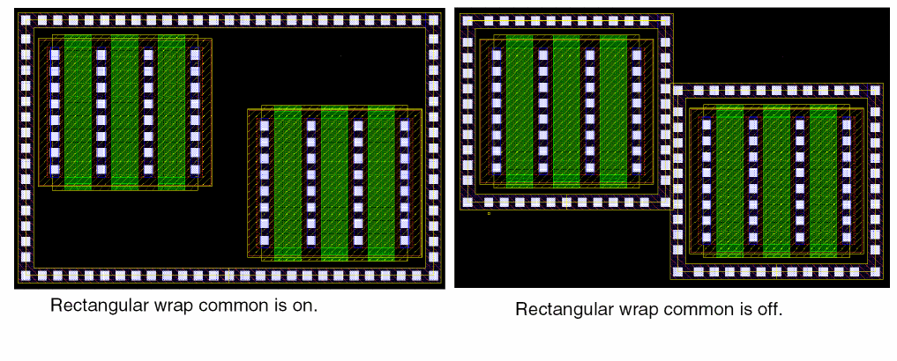

3
Creating Fluid Guard Rings (New GUI)
After you have installed a fluid guard ring (FGR) as a device class in the technology file, Virtuoso Layout Suite lets you create and edit the FGRs. For more information about FGR installation, see Installing Fluid Guard Rings.
You can create FGRs by using the wrap or interactive mode. You can also create FGRs as concentric rings.
You can create fluid guard rings using the new GUI, Create Fluid Guard Ring Form (New GUI), which offers enhanced usability with a simplified and user-friendly interface which is a single-page GUI with intuitive option categorization. You can also specify the asymmetric enclosure for FGR layers. This functionality requires adding new FGR devices using the Install Guard Ring form.
The new Create Guard Ring functionality also supports advanced constraints that ensure creation of a DRC-compliant guard ring by getting the correct contact spacing from the appropriate constraint. Additionally, the .xfgrRules file lets you override constraint precedence, updating the default values of the device parameters, and adding the attributes to enable the auto FGR functionality without updating the technology file.
You can dynamically view all the shapes of an FGR while creating, stretching, or splitting it. For more information, see Technology Rules Applied During Fluid Guard Ring Creation.
0 for viewing FGR layers. At Stop Level 0, an FGR is visible as an instance in the design.Override the Default Values in the Install Guard Ring Form
You can use the .xfgrRules file to override the default values specified in the Install Guard Ring form for fluid guard ring devices. The .xfgrRules file is saved in the technology library. You can use .xfgrRules file to setup new functionalities, such as Auto FGR, and hide FGR devices from the Create Guard Ring form. You can also use this file to define device parameter defaults and constraints precedence order.
The .xfgrRules file defines multiple device specifications that are used while creating an FGR.
Examples of .xfgrRules file
In the following example, the constraint precedence for cut spacing, metal enclosure, and diffusion enclosure are specified. Also, net name and contact spacing around cuts have been specified.
In the following example, the device name specified in the first set of properties is (), which means that the constraint precedence is applicable to all devices in the current technology. Also, all device in the current technology are hidden because vfoGRHideDeviceInForms has been specified.
The next set of properties specifies the constraint precedence for the device, nFGR. The default contact spacing order is specified in contSpacingOrder. The default metal enclosure order is specified in metalEnclosureOrder. The default diffusion enclosure order is specified in diffusionEnclosureOrder. The net name for nFGR is VDD. This value overwrites the value defined for all the devices above. Also, the nFGR device is visible in the Create Fluid Guard Ring form.
Supported Constraint Orders, Parameters, and Attributes
The following table lists the default constraint order for cut spacing, metal-cut enclosures, and diffusion-cut enclosures:
| Name | Default Order |
|
minLargeViaArraySpacing |
|
The following table lists the supported parameters for the .xfgrRules file:
| Parameter Name | Description |
The following table lists the supported attributes for the .xfgrRules file:
| Attribute Name | Description |
|
Associates secondary fluid guard rings to primary fluid guard rings |
|
If you enable the XFGR_ENHANCED_OUTERRING_ SUPPORT Shell environment variable, besides the devices section, the following additional sections are available in the .xfgrRules file:
-
deviceConf: Lets you define the configurations corresponding to a device. For a device, there could be multiple device configurations which can be used. ThedeviceConfoverrides the value if that is already defined in devices section for a device. -
virtualDevice: Lets you define virtual devices and its outer rings.
Example
You can use the virtualDevice section in the .xfgrRules file to define a set of outer-rings. The virtualDevice section supports deviceConf only, and is only available in the Device field in the Create Fluid Guard Ring form.
If you want to create a multi-ring fluid guard ring device, define the virtualDevice section in the .xfgrRules file.
Creating a Fluid Guard Ring
-
In the design window, choose Create – Fluid Guard Ring.
This opens the Create Fluid Guard Ring Form (New GUI).
-
Select the creation method you want to use for creating the FGR, Wrap or Interactive. The following creation methods are available:
- Creating an FGR Using the Wrap Creation Method
-
Creating an FGR Using the Interactive Creation Method
- Creating a Rectangle Shape FGR
- Creating a Polygon Ring Shape FGR
- Creating a Polygon Fill Shape FGR
-
Creating a Path Shape FGRAlternatively, you can enable the Guardring toolbar from the Window – Toolbars menu and click the required icon for creating the related type of FGR. This also opens the Create Fluid Guard Ring Form (New GUI). The default tab displayed is based on the icon selected.
- Configure the settings for creating an instance of the FGR device.
- Create the FGR in the selected mode.
-
At any point, press
F3to bring up the Create Guard Ring form to change mode settings or to change the mode. -
Press
Escor click Cancel in the form to create the FGRs.
If you enable the XFGR_ENHANCED_OUTERRING_ SUPPORT Shell environment variable, the Use and Width columns are displayed in the table in the Outer Rings section of the Create Fluid Guard Ring Form (New GUI). The Use field lets you select the device in the table while creating outer rings. The Width field displays the width of the outer ring.
Managing Visibility of Devices in the Create Guard Ring Form
You can restrict users from creating FGRs using a particular device. As a result, the device is not be listed in the Device drop-down list box of each tab on the Create Guard Ring form. For detailed information, refer to the Hiding a Device from Create Guard Ring Form section.
In case, you want to use a specific device to create its instances in the layout and do not see it listed in the Device drop-down list box, it means the device is hidden. For information about making such a device visible on the form, refer to the Making a Hidden Device Visible on Install and Create Forms section.
Creating an FGR Using the Wrap Creation Method
In the wrap creation method, an FGR is created around the objects you select.
- Set the Creation Method to Wrap.
- Set the Shape to Rectangular or Rectilinear.
- Select the Device, Contact Rows, Path Width, and Net Name based on the FGR you want to create.
-
In the Wrap Settings section, select a Wrap Type. You can choose from the following options:
-
Place at Minimum Distance: Identifies whether the
minSpacingrule defined for the object layers, which include both original and derived layers, should be used to compute the spacing between the FGR and the object. - Reference Layer: Lets you create the FGR around a selected set of objects by specifying the spacing between a pair of layers. When you choose the Reference Layer option you define the layer list and the spacing value to be maintained for the specified layer pair.
- Enclose By: Lets you create an FGR around the bounding box of the selected object.
-
Place at Minimum Distance: Identifies whether the
Creating an FGR using Place at Minimum Distance
-
Click the object around which you want to create the FGR.
An FGR is automatically created around the clicked object.
- Select an area on the layout that covers one or multiple objects.
-
Press
Shiftand click an area to select more objects to add them to the selection. -
Press
Ctrland click an object to remove it from the selection. -
An FGR is automatically created around the area selected objects.
If Wrap Common is selected, the following parameters determine whether a common or individual FGRs will enclose the selected devices:- Distance between the devices to be wrapped around
- Path width of the FGR
- Distance of the FGR from the devices
A common FGR is created if the individual FGRs overlap and merge and Wrap Common is selected. To create a common FGR, reduce the distance between devices or increase the Path Width or Enclose by values.
If Wrap Common is off, the FGR wrap-around is created around individually clicked or area selected shapes, as shown below.
- Specify the settings in the Implant Layers Settings section.
-
Specify the number of rings in the Number of Outer Rings field on the Outer Rings section. For each Ring Number in the table, specify values in the following fields:
- Device: Name of the FGR device.
- Rows: Number of contact rows.
- Distance: Distance between the consecutive rings. This option is enabled only if you have selected Enclose By.
-
Net Name: Name of the net to which the outer ring.
The example below shows one concentric FGRs created around the central rectangular object. A part of the form shows the settings on the Outer Rings tab.
Creating an FGR using the Reference Layer
You can create FGR around a selected set of objects by specifying the spacing between a pair of layers. When you choose the Reference Layer option you define the layer list and the spacing value to be maintained for the specified layer pair.The table entries are automatically saved in a file. Whenever you choose the reference layer wrap, this table will be automatically be populated for the selected FGR device.
The generated FGR instance honors the spacing value specified for each relevant pair and maintains the symmetric spacing on all sides of the object. If there is no specified reference layer no guard ring is created for that object.
Creating an FGR using Enclose By
An FGR is created around the bounding box of the selected object.
Creating an FGR Automatically
In the Auto FGR creation mode for wrap, an FGR is created around the selected objects using the default values of the parameters specified in the FGR device definition in the technology file.
FGRs can be created in Auto mode if the vfoAssociatedDevices and vfoAssociatedRings properties are specified in the technology file. The example below shows these properties.
tfcDefineDeviceProp(
; (viewName deviceName propName propValue)
(layout pgr vfoAssociatedDevices "nmos1v;nmos1v_hvt")
(layout pgr vfoAssociatedRings "ngr;pgr")
)
If any of the above properties are specified in the technology file, and there is at least one VLS-based or native FGR device defined in technology file, the option Choose Device Automatically option is enabled. The FGR is automatically created based on these properties in the technology file.
You need to enable the Choose Device Automatically option in the Create Fluid Guard Ring form and click the device on the canvas to create an FGR automatically. The device around which the FGR needs to be created can be an MOS device instance or an FGR instance. In addition, the vfoAssocitedRings property should be specified for creating rings of FGRs on top of another FGR.
If you specify more than one outer ring, you can specify the rows and net names for subsequent rings.
Creating an FGR Using the Interactive Creation Method
In the Interactive creation method, an FGR is created.
- Select Interactive from the Creation Method option.
- Set the Shape option to Rectangle, Polygon Ring, Polygon Fill, or Path.
The FGR is created based on the options you select for the selected shape.
Creating a Rectangle Shape FGR
In this mode, an FGR is created based on the rectangle you draw.
- Set up the options on the Create Fluid Guard Ring form, as required.
-
Click to define the opposite corners of the rectangle around the object for which you want to create the FGR.
A rectangular FGR gets created around the object. In this illustration, a rectangular FGR is created around multiple objects.
If you have installed the FGR device with the Cover Interior check box selected for the Implant/Well layer (Layers section), the rectangular FGR enclosure is filled with the implant or well layer, as shown below.
Creating a Polygon Ring Shape FGR
In this mode, an FGR is created based on the polygon you draw.
- Set up the options as required.
-
Click to define the points of the polygon.
A polygon ring type FGR gets created.
Creating a Polygon Fill Shape FGR
In this mode, an FGR is created based on the polygon you draw and the polygon area is filled with FGR. You can use this method to fill up spaces between objects.
- Set up the options as required.
-
Click to define the points of the polygon.
A polygon fill type FGR gets created.
Creating a Path Shape FGR
In this mode, an FGR is created along the path you draw.
- Set up the options, as required.
- Click to define the points of the path around the object around which you want to create an FGR.
-
Double-click or press
Enterto complete the path.
A path-shaped FGR is created around the object. You can control the width of the FGR by using the Path Width field.
Asymmetric Enclosures
You can create an asymmetric enclosure of shapes around the fluid shape in FGR. You can define different outside, bottom, or left and inside, top, or right enclosures for implant, metal and diffusion shapes. You can also only specify negative enclosure values for implant layers.
You can specify different and positive and different values for inside and outside enclosures of implant or well layers with respect to diffusion as shown in the figure below.
You can specify negative and different values for inside and outside enclosures of implant or well layers with respect to diffusion as shown in the figure below.
You can specify negative values for outside enclosures of implant or well layers with respect to diffusion so that they are retracted inside the diffusion shape as shown in the figure below. In this case, the Cover option is selected.

You can specify negative and different values for inside and outside enclosures of implant or well layers with respect to diffusion as shown in the figure below.
DRD Rules Check
While creating an FGR, you can also specify the design-rule-driven (DRD) rules that need to be checked and applied during the process. This can be done by accessing the DRD Options form through the DRD toolbar or the Options — DRD Edit menu.
Use the DRD Options form to enable the Enforce, Notify, or Post Edit mode at the current cellview, current to bottom, current to stop level, or current to user level hierarchy depth. The following image illustrates annotations to indicate the violation of the minimum spacing (minSpacing) rule. This notification is displayed if the minSapcing constraint is selected for Notify mode under the Filters tab of the DRD Options form.
For more information about the DRD Options form, see
Technology Rules Applied During Fluid Guard Ring Creation
The following table lists the technology rules that are applicable during the creation of an FGR:
| Form Field | Applicable Technology Rule(s) (Listed in order of precedence) |
|
minLargeViaArrayCutSpacing |
|
|
Minimum of minOppExtension rule (a, b) |
|
|
Minimum of minOppExtension rule(a, b) |
|
|
Maximum of minOppExtension rule (a, b) |
You can install an FGR with its implant layer enclosure value less than the default value defined in the technology file.
Important Points to Remember
-
If a technology rule is not been defined in the technology file, but is used by an FGR, the system considers its value as zero. For example, the
minOppExtensionrule is used for identifying the enclosure values of a contact. If this rule is not defined in the technology file when creating an FGR, the system considers the enclosure values as zero. -
If you have selected the Cover Interiors option in the Create Fluid Guard Ring form for the Implant/Well layer (Layers section), the
minWidthtechnology rule is not checked at the time of creating the wrap-type and closed path-type FGRs. -
You can install an FGR device with an implant layer enclosure value less than the technology default. For example, consider an FGR device in
gpdk045withOxide,cont, andMetal1as the layers (diffusion, contact, and metal respectively), andNWellas the implant. The minimum enclosure of Nwell over diffusion (Oxide) in the technology file is0.09. Despite this, you can install the FGR device0.06(with a warning message). -
By default, when an FGR is created in the Wrap mode with the Place at Minimum Distance selected, the spacing between the guard ring and the object is computed based on the
minSpacingrule defined for the object layers around which the FGR is created. The object layer includes both original and derived layers.
Return to top